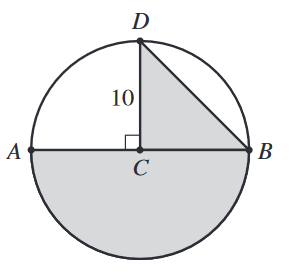

In the circle shown below, \(C\) is the center, \(\overline{AB}\) is a diameter, and \(\overline{CD}\) is a radius of length 10 inches
that is perpendicular to \(\overline{AB}\). Which of the following values is closest to the area, in square inches, of the shaded region (the combined
area of the semicircle and \(\triangle{BCD}\)) ?

The area of the semicircle is half of the area of the circle.
$$ A_{\text{semicircle}} = \frac{1}{2}\pi r^2 $$
$$ A_{\text{semicircle}} = \frac{1}{2}\pi (10)^2 \approx 157 \text{ in}^2 $$
The area of the triangle (note that the base and height are both radii of the circle):
$$ A_{\text{triangle}} = \frac{1}{2}bh $$
$$ A_{\text{triangle}} = \frac{1}{2}(10)(10) = 50 \text{ in}^2 $$
The total area is the sum:
$$ 157 + 50 = \boxed{207} $$